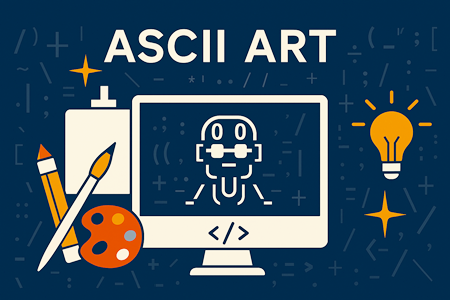
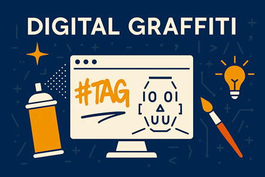
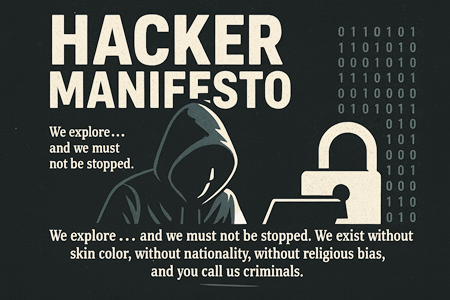

해커 예술의 개념
해커 예술은 단순한 불법 행위가 아니라, 창의적 문제 해결과 기술적 아름다움을 추구하는 문화적, 철학적 개념입니다. 해커들은 컴퓨터와 네트워크를
도구로 삼아 새로운 방식으로 세계를 탐구하고 표현하며, 이를 예술적 행위로 봅니다. 해커 예술은 기술과 창의성의 융합, 논리와 아름다움의 탐구,
그리고 자유로운 정보 활용을 통해 디지털 시대의 새로운 예술적 개념을 형성합니다.
1. 해커 윤리와 예술성: 해커들은 문제를 끝까지 파헤치고, 그 과정에서 발견되는 논리적 아름다움을 중시합니다.
이는 예술가가 작품을 통해 미적 가치를 추구하는 것과 유사합니다.
2. 창작자로서의 해커: 해커는 화가나 디자이너처럼 새로운 형태의 창작자로 이해됩니다. 소프트웨어나 시스템을 다루며, 그 속에서 발견되는 창의적 해결책을 예술적 표현으로 봅니다.
3. 현대 예술과의 접점: 예술가 에반 로스 같은 인물은 해커적 사고를 예술 디자인, 액티비즘에 적용했습니다.
그는 공공장소와 인터넷, 대중문화 속 순간을 포착해 해커 철학을 예술로 확장했습니다.
4. 상생 진화: 해킹은 보안 세계를 시험하고, 그 결과 보안이 강화되는 과정을 낳습니다. 이는 생물학적 진화처럼, 도전과 대응을 통한 발전을 예술적,
철학적 맥락에서 이해할 수 있습니다.
5. 문화적 의의: 해커 예술은 기술을 단순한 도구가 아닌 표현 수단으로 바라보며, 정보의 자유와 창의적 탐구를 강조합니다.
이는 디지털 시대의 새로운 예술적 패러다임을 제시합니다.
ASCII 아트

해커 예술에서 ASCII 아트는 문자와 기호를 활용해 시각적 이미지를 창조하는 디지털 표현 방식으로, 기술과 창의성의 융합을 상징합니다.
이는 해커 문화의 철학과 미학을 담아 낸 예술적 실천입니다.
해커 예술에서 ASCII 아트는 기술적 탐구와 창의적 표현이 결합된 디지털 미학으로, 정보 시대의 열린 예술 형태로 평가 받습니다.
1. 개념: ASCII 아트는 알파벳, 숫자, 특수문자 등 텍스트 기반의 기호를 조합해 이미지를 표현하는 디지털 예술 형식입니다.
초기 컴퓨터 환경에서 그래픽을 대신해 사용되었으며, 지금은 창의적 표현 수단으로 발전했습니다.
2. 해커 문화와의 연결: 해커들은 시스템을 탐구하고 재창조하는 과정에서 ASCII 아트를 활용해 기술적 아름다움과 창의성을 표현합니다.
이는 단순한 장난이 아니라, 정보와 코드의 미학을 드러내는 방식입니다.
3. 철학적 의미: ASCII 아트는 제한된 자원 속 창의성을 상징합니다.
고정폭 폰트와 단순한 문자만으로 복잡한 이미지를 구현하는 과정은 해커 정신의 핵심인 '제약 속 혁신'을 반영합니다.
4. 예술적 가치: 이 아트는 점묘화처럼 멀리서 보면 이미지가 드러나는 구조를 가지며, 논리적 사고와 시각적 감각이 결합된 결과물입니다.
다양한 스타일로 확장되며 디지털 예술의 한 장르로 자리잡았습니다.
5. 기술적 접근성: 복잡한 그래픽 툴 없이 텍스트 편집기만으로 제작 가능해, 누구나 참여할 수 있는 열린 예술 형태로 평가 받습니다.
디지털 그래피티

해커 예술에서 디지털 그래피티는 기술과 창의성을 결합한 표현방식으로, 공공 디지털 공간에 메시지를 남기며 정보 자유, 저항, 미학을 동시에 담아냅니다.
이는 전통 그래피티의 정신을 사이버 공간으로 확장한 예술적 실천입니다. 이는 사이버 공간에서의 자유로운 표현과 미적 개입을 가능하게 합니다.
1. 개념: 디지털 그래피티는 물리적 벽이 아닌 '디지털 공간(웹사이트, 앱, 인터페이스)' 등에 시각적 흔적이나 메시지를 남기는 행위입니다.
해커들은 이를 통해 시스템을 변형하거나, 창의적 개입을 시도합니다.
2. 해커 예술과의 연결: 해커는 단순한 침입자가 아니라 창의적 탐구자로서, 디지털 그래피티를 통해 기술적 구조를 예술적으로 재해석합니다.
이는 정보의 자유와 표현의 해방을 상징합니다.
3. 표현 방식: 코드 삽입, UI 변형, 웹사이트 구조 개조, 인터랙티브 요소 삽입 등 다양한 방식으로 구현됩니다.
일부는 사용자 경험을 바꾸거나, 시각적 충격을 통해 메시지를 전달합니다.
4. 미학적 가치: 단순한 시각적 장난이 아니라, 기술과 예술의 융합을 통해 새로운 미적 경험을 제공합니다.
알고리즘적 아름다움, 인터페이스의 재구성, 정보 흐름의 시각화 등이 포함됩니다.
5. 인터랙티브 예술로의 확장: 관람자와의 상호작용을 통해 작품이 변화하거나 반응하는 구조를 가지며, 참여형 예술로 발전합니다.
6. 문화적 의의: 디지털 그래피티는 해커 문화의 창의성과 저항성을 예술로 승화시킨 형태로, 디지털 시대의 새로운 표현 방식으로 자리잡고 있습니다.
해커 메니페스토

해커 메니페스토는 해커 정신과 윤리를 선언한 상징적 문서로, 해킹을 단순한 불법 행위가 아닌 지적 탐구와 자유로운 정보 접근을 위한 철학적 실천으로 규정합니다.
이는 해커 예술의 핵심 가치와 연결되며, 기술을 통한 창의성과 저항의 미덕을 담고 있습니다.
해커 메니페스토는 해커 예술의 철학적 뿌리로, 기술을 통한 창의적 저항과 정보 해방의 선언문입니다.
이는 해커를 예술가로 이해하는 문화적 전환점이 되었으며, 디지털 시대의 표현 자유를 상징합니다.
1. 작성 배경: 1986년에 해커 'The Mentor'가 체포 후 작성한 글로, Phrack이라는 해커 저널에 실리며 해커 문화의 상징이 되었습니다.
2. 주요 메시지: 해커는 단순한 범죄자가 아니라, 세상을 이해하라는 지적 탐구자이며, 정보의 자유와 기술적 아름다움을 추구하는 존재라고 선언합니다.
3. 해커 윤리 강조: 해커는 시스템을 파괴하려는 것이 아니라, 그 구조를 이해하고 개선하려는 욕망을 가집니다.
이는 예술가가 재료를 탐구하고 표현하는 과정과 유사합니다.
4. 자기 정체성 선언: 해커는 외로운 존재지만, 기술을 통해 세계와 연결되고자 하는 욕망을 가집니다.
이는 디지털 시대의 예술가적 정체성과도 맞닿아 있습니다.
5. 예술적 해석: 메니페스토는 단순한 선언문을 넘어, 해커 예술의 철학적 기반으로 작용합니다.
해커는 코드를 통해 미적 구조를 만들고, 시스템을 재구성하는 창작자로 이해됩니다.
6. 문화적 영향력: 이후 수많은 해커, 예술가, 디지털 액티비스트들이 이 문서를 인용하며, 정보 자유, 표현의 해방, 기술의 미학을 주장하는
기반으로 삼았습니다.